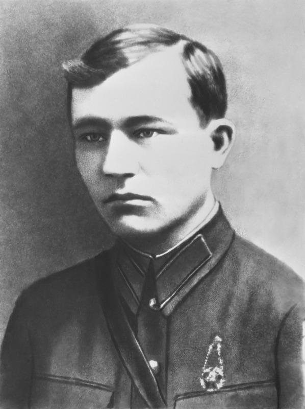

Звание: лейтенант пограничных войск
Дата рождения: 1914 год
Дата гибели: 24 июня 1941 года
Андрей Кижеватов командовал обороной Тереспольских ворот Брестской крепости. С группой из 30 пограничников он отразил 8 атак противника в первые дни войны.
Несмотря на превосходство врага в живой силе и технике, Кижеватов и его бойцы удерживали позиции более двух суток. Они метко стреляли из винтовок и пулемётов, отбивали атаки гранатами и даже в рукопашную схватку.
24 июня 1941 года, прикрывая отход товарищей, Андрей Кижеватов погиб в бою. Он умер как герой, выполнив свой воинский долг до конца.
Имя Андрея Кижеватова увековечено на мемориальных плитах Брестской крепости. Его подвиг стал примером мужества и самоотверженности для поколений.